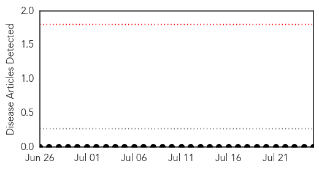
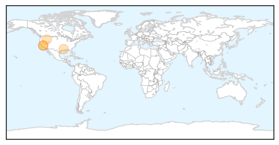
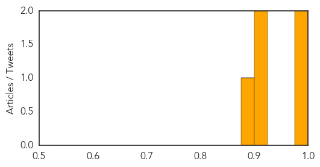

Mumps
30-Day Web Trend
0 alerts, 0 warnings

30-Day Twitter Trend
0 alerts, 0 warnings

Article Locations

Article Confidences

Top Articles:
-
No articles found for Jul 25, 2014
Top Tweets:
-
No tweets found for Jul 25, 2014
West Nile Virus
30-Day Web Trend
2 alerts, 3 warnings
30-Day Twitter Trend
0 alerts, 0 warnings

Article Locations
Article Confidences
Top Articles:
- 0.978
- Bird tests positive for West Nile Virus
- 0.978
- Probable human case of West Nile virus in Simcoe Muskoka: health unit
- 0.921
- Most Birds Dying from West Nile Virus Have Been Found in...
- 0.918
- First West Nile death in Louisiana confirmed in Caddo Parish -
- 0.890
- Spokane, North Idaho News & Weather KHQ.com
Top Tweets:
-
No tweets found for Jul 25, 2014